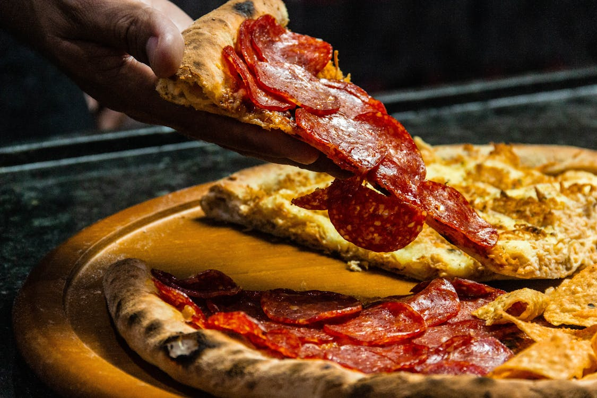

Ingredients
- 2 cups all-purpose flour
- 100 ml tomato ketchup
- 1 tomato
- 2 onions
- 1 teaspoon chili flakes
- 1 teaspoon baking powder
- 1 teaspoon sugar
- 2 teaspoons virgin olive oil
- 100 g processed cheese
- 4 mushrooms
- 1/2 capsicum (green pepper)
- 1 teaspoon oregano
- 1/2 cup mozzarella cheese
- 1 tablespoon dry yeast
- Water as required
Method
- In a small bowl, dissolve yeast and sugar in warm water. Let stand until creamy, about 10 minutes.
- In a large bowl, combine flour, olive oil, salt, and the yeast mixture. Stir well until a dough forms.
- Knead the dough on a floured surface until smooth and elastic, about 8 minutes. Place dough in a well-oiled bowl, cover with a damp cloth, and let rise until doubled in volume, about 1 hour.
- Preheat oven to 450 degrees F (230 degrees C). Punch down dough, then form into a tight ball. Allow to rest for a few minutes.
- Roll out dough on a lightly floured surface to desired thickness. Transfer to a lightly greased pizza pan or baking sheet.
- Spread pizza sauce over dough. Top with shredded mozzarella cheese and your favorite toppings.
- Bake in preheated oven for 15 to 20 minutes, or until crust is golden brown and cheese is bubbly.
- Remove from oven, slice, and serve hot. Enjoy your homemade pizza!